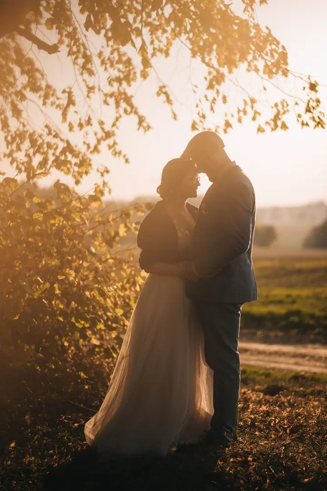
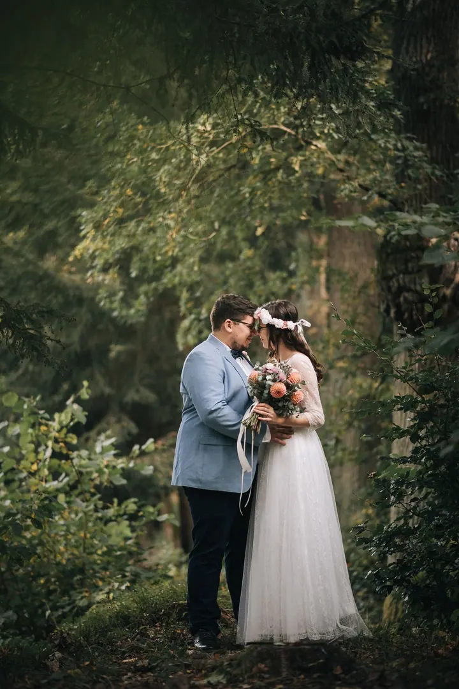
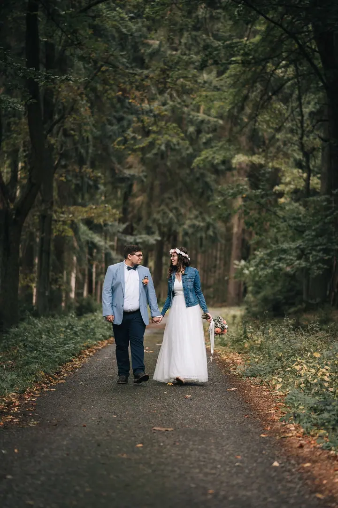

Svatební fotografie
Fotím celý svatební den od obřadu přes gratulace až po společné focení novomanželů. Nejraději vás na chvíli vezmu stranou do přírody, mezi stromy a do pozdního světla.

Jmenuji se Petr Hovorka a fotím svatby. Nejvíc mě baví chvíle, kdy se svatební den na moment zastaví a vy dva odejdete kousek stranou do lesa, na louku nebo do posledníh…
Rezervovat termínJsem svatební fotograf a na svatbách mě nejvíc baví obyčejné, opravdové chvíle. Nevěsta, která vede ženicha za ruku po trávě. Ženich, který vytáhne kytaru a zahraje jen pro ni. Hosté, kteří vás po obřadu zasypou okvětními lístky.


Rád fotím venku. Lesní cesty, staré stromy, kamenné zdi a světlo, které se večer zbarví do zlata. Nechci vás stavět do strnulých póz, raději vás nechám jít, povídat si a být spolu. Já jsem u toho a fotím.
Hotové fotky dostanete v online galerii na mém webu, takže je máte kdykoli po ruce a můžete je snadno ukázat rodině a přátelům.
Co fotím
Fotím celý svatební den od obřadu přes gratulace až po společné focení novomanželů. Nejraději vás na chvíli vezmu stranou do přírody, mezi stromy a do pozdního světla.
Postup
Napište mi nebo zavolejte, kdy a kde se berete. Ověřím, jestli mám termín volný, a domluvíme se, co od fotek čekáte.
Projdeme spolu harmonogram dne a místa, kde by se dalo fotit. Rád poradím, kdy vyrazit na společné focení, aby bylo hezké světlo.
Fotím obřad, gratulace, hosty i drobné momenty mezi tím. Na společné focení si vás na chvíli ukradnu stranou.
Vybrané a upravené fotky najdete v online galerii na mém webu, odkud si je můžete stáhnout a poslat dál.
Otázky
Napište mi přes formulář nebo zavolejte. Domluvíme se na podrobnostech a termín vám podržím.
Nejraději venku, v lese, na louce nebo u vody, klidně kousek od místa svatby. Místo vybereme spolu podle toho, kde se berete.
Vůbec ne. Spíš vás nechám procházet se a povídat si a fotím to, co se mezi vámi přirozeně děje.
Fotky vám předám v online galerii na mém webu, kde je najdete i později.